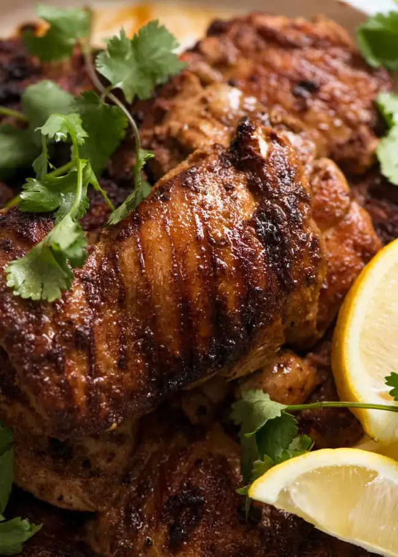

Shawarma Recipe

Chicken Shawarma
Chicken Shawarma is a Middle Eastern dish that’s become incredibly popular around the world. It’s basically a flavorful, marinated chicken that’s slow-roasted on a vertical spit and then thinly sliced to be served in a wrap, pita, or on a plate. Trust me, once you’ve had a bite, you’ll understand why it’s gained such a following.
can be served on a plate with rice and salad, but it’s usually wrapped up in pita bread or flatbread (like naan). The chicken is sliced very thin so that you can easily bite through it when eating your shawarma sandwich!
Ingredients
Chiken
- 2 lbs boneless boneless skinless chicken thighs
Marinade
- 1/4 cup plain Greek yogurt
- 1/4 cup olive oil
- 1/4 cup lemon juice about 2 lemons
- 6 cloves garlic minced
- 1 tsp ground cumin
- 2 tsp paprika
- 1 tsp ground turmeric
- 1 tsp ground coriander
- 1/2 tsp ground cinnamon
- 1/4 tsp cayenne pepper
- salt and pepper to taste
- Toppings: sliced tomatoes cucumber, lettuce, pickles, tahini sauce, or garlic sauce
Steps
Marinate:
- In a large bowl, combine the Greek yogurt, olive oil, lemon juice, minced garlic, cumin, paprika, turmeric, coriander, cinnamon, cayenne pepper, salt, and black pepper. Mix well to create the marinade.
- Add the chicken thighs to the marinade, ensuring each piece is well coated. Cover the bowl with plastic wrap and refrigerate for at least 2 hours, preferably overnight for maximum flavor.
Cook:
- Remove the chicken from the marinade, allowing any excess to drip off.
- Stovetop: Heat a large non-stick skillet or cast-iron pan over medium-high heat. Add 2 tablespoons of olive oil to the pan, and let it heat up. Add the marinated chicken. Sauté the chicken for 6-8 minutes on each side, or until fully cooked and golden brown. If needed, cook the chicken in batches to avoid overcrowding the pan.
- Oven method: Preheat your oven to 425°F (220°C). Line a large baking sheet with parchment paper. Arrange the chicken thighs on the prepared baking sheet. Bake for 25-30 minutes, or until the chicken is cooked through and the edges are slightly charred.
- While the chicken is cooking, prepare your desired toppings and warm up your pita or flatbread.
- Once the chicken is cooked, remove it from the oven and let it rest for 5 minutes. Chop into bite-size or slice the chicken into thin strips.
- To assemble the shawarma, spread a layer of tahini or garlic sauce onto the warm pita or flatbread. Add the sliced chicken and your choice of toppings.
- Wrap the filling with the flatbread, and enjoy your delicious homemade chicken shawarma.
- Don’t forget napkins—this tasty dish can get a little messy!